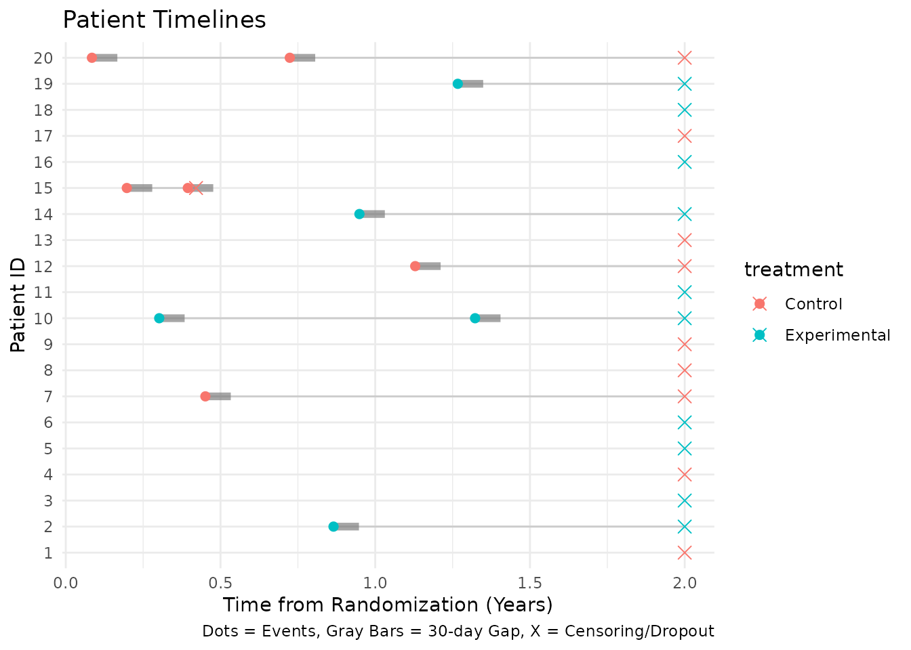

This vignette demonstrates how to use the nb_sim()
function to simulate a 2-arm clinical trial with recurrent event
outcomes.
Simulation setup
We will simulate a small trial with the following parameters:
- Enrollment: 20 patients total, recruited over 5 months with a constant rate.
- Treatments: Two groups (Control vs. Experimental) with a 1:1 allocation ratio.
-
Event Rates:
- Control: 0.5 events per year.
- Experimental: 0.3 events per year.
-
Dropout:
- Control: 10% annual dropout rate.
- Experimental: 5% annual dropout rate.
- Maximum Follow-up: Each patient is followed for a maximum of 2 years from randomization.
Defining input parameters
# Enrollment: rate of 4 patients/month for 5 months -> ~20 patients
enroll_rate <- data.frame(
rate = 4,
duration = 5
)
# Failure rates (events per unit time)
fail_rate <- data.frame(
treatment = c("Control", "Experimental"),
rate = c(0.5, 0.3) # events per year (assuming time unit is year, adjust enroll duration if needed)
)
# Let's ensure time units are consistent.
# If fail_rate is per year, then durations should be in years.
# 5 months = 5/12 years.
enroll_rate <- data.frame(
rate = 20 / (5 / 12), # 20 patients over 5/12 years
duration = 5 / 12
)
# Dropout rates (per year)
dropout_rate <- data.frame(
treatment = c("Control", "Experimental"),
rate = c(0.1, 0.05),
duration = c(100, 100) # constant rate for long duration
)
# Maximum follow-up per patient (years)
max_followup <- 2Running the simulation
set.seed(123)
sim_data <- nb_sim(
enroll_rate = enroll_rate,
fail_rate = fail_rate,
dropout_rate = dropout_rate,
max_followup = max_followup,
n = 20
)
head(sim_data)
#> id id treatment enroll_time tte calendar_time event
#> 1 1 1 Control 0.01757203 2.0000000 2.0175720 0
#> 2 2 2 Experimental 0.02958474 0.8651927 0.8947775 1
#> 3 2 2 Experimental 0.02958474 2.0000000 2.0295847 0
#> 4 3 3 Experimental 0.05727338 2.0000000 2.0572734 0
#> 5 4 4 Control 0.05793124 2.0000000 2.0579312 0
#> 6 5 5 Experimental 0.05910231 2.0000000 2.0591023 0The output contains multiple rows per subject: *
event = 1: An actual recurrent event. *
event = 0: The censoring time (either due to dropout or
reaching max_followup).
Analyzing the data
We can aggregate the data to calculate the observed event rates and total follow-up time for each group.
sim_dt <- as.data.table(sim_data)
sim_dt[, censor_followup := ifelse(event == 0, tte, 0)]
summary_stats <- sim_dt[
,
.(
n_subjects = uniqueN(id),
total_events = sum(event == 1),
total_followup = sum(censor_followup),
observed_rate = sum(event == 1) / sum(censor_followup)
),
by = treatment
]
summary_stats |>
gt() |>
tab_header(title = "Summary Statistics by Treatment") |>
cols_label(
treatment = "Treatment",
n_subjects = "N",
total_events = "Events",
total_followup = "Follow-up",
observed_rate = "Rate"
) |>
fmt_number(columns = total_followup, decimals = 2) |>
fmt_number(columns = observed_rate, decimals = 3)| Summary Statistics by Treatment | ||||
| Treatment | N | Events | Follow-up | Rate |
|---|---|---|---|---|
| Control | 10 | 6 | 18.42 | 0.326 |
| Experimental | 10 | 5 | 20.00 | 0.250 |
Inspect first ten records
Before plotting, we can look at the first ten records from the simulated dataset.
head(sim_data, 10)
#> id id treatment enroll_time tte calendar_time event
#> 1 1 1 Control 0.01757203 2.0000000 2.0175720 0
#> 2 2 2 Experimental 0.02958474 0.8651927 0.8947775 1
#> 3 2 2 Experimental 0.02958474 2.0000000 2.0295847 0
#> 4 3 3 Experimental 0.05727338 2.0000000 2.0572734 0
#> 5 4 4 Control 0.05793124 2.0000000 2.0579312 0
#> 6 5 5 Experimental 0.05910231 2.0000000 2.0591023 0
#> 7 6 6 Experimental 0.06569608 2.0000000 2.0656961 0
#> 8 7 7 Control 0.07224248 0.4510840 0.5233265 1
#> 9 7 7 Control 0.07224248 2.0000000 2.0722425 0
#> 10 8 8 Control 0.07526888 2.0000000 2.0752689 0Plotting events
We can visualize the events and censoring times for each subject. To
avoid any side-effects from data.table, we convert the
dataset back to a plain data frame. We also display an event gap after
each event where no new events can be recorded. For illustration
purposes in this plot, we show a 30-day gap so it is
visible on the timeline.
sim_plot <- as.data.frame(sim_data)
names(sim_plot) <- make.names(names(sim_plot), unique = TRUE)
events_df <- sim_plot[sim_plot$event == 1, ]
censor_df <- sim_plot[sim_plot$event == 0, ]
# Define a 30-day gap for visualization (default is usually 5 days)
gap_duration <- 30 / 365.25
# Create segments for the gap after each event
events_df$gap_start <- events_df$tte
events_df$gap_end <- events_df$tte + gap_duration
ggplot(sim_plot, aes(x = tte, y = factor(id), color = treatment)) +
geom_line(aes(group = id), color = "gray80") +
# Add gap segments
geom_segment(
data = events_df,
aes(x = gap_start, xend = gap_end, y = factor(id), yend = factor(id)),
color = "gray50", linewidth = 2, alpha = 0.7
) +
geom_point(data = events_df, shape = 19, size = 2) +
geom_point(data = censor_df, shape = 4, size = 3) +
labs(
title = "Patient Timelines",
x = "Time from Randomization (Years)",
y = "Patient ID",
caption = "Dots = Events, Gray Bars = 30-day Gap, X = Censoring/Dropout"
) +
theme_minimal()
Cutting data by analysis date
We can truncate the simulated data at an interim analysis date using
cut_data_by_date(). The function returns a single record
per participant with the truncated follow-up time (tte) and
number of observed events. By default, a 5-day gap
(event_gap = 5 / 365.25) is applied after each event,
during which no new events are counted and time at risk is excluded.
cut_summary <- cut_data_by_date(sim_data, cut_date = 1.5)
head(cut_summary)
#> id treatment enroll_time tte events
#> 1 1 Control 0.01757203 1.482428 0
#> 2 2 Experimental 0.02958474 1.456726 1
#> 3 3 Experimental 0.05727338 1.442727 0
#> 4 4 Control 0.05793124 1.442069 0
#> 5 5 Experimental 0.05910231 1.440898 0
#> 6 6 Experimental 0.06569608 1.434304 0Wald test (Mütze et al. 2019)
Using the truncated data we can run a negative binomial Wald test as described by Mütze et al. (2019).
mutze_res <- mutze_test(cut_summary)
mutze_res$group_summary |>
gt() |>
tab_header(title = "Mütze Test: Group Summary") |>
fmt_number(columns = c(events, exposure), decimals = 2)| Mütze Test: Group Summary | |||
| treatment | subjects | events | exposure |
|---|---|---|---|
| Control | 10 | 6.00 | 12.58 |
| Experimental | 10 | 4.00 | 13.58 |
mutze_res$rate_ratio
#> [1] 0.5273708Finding analysis date for target events
Often we want to perform an interim analysis not at a fixed calendar
date, but when a specific number of events have accumulated. We can find
this date using get_analysis_date() and then cut the data
accordingly. This function also respects the event_gap
(defaulting to 5 days).
# Target 15 total events
target_events <- 15
analysis_date <- get_analysis_date(sim_data, planned_events = target_events)
#> Only 11 events in trial
print(paste("Calendar date for", target_events, "events:", round(analysis_date, 3)))
#> [1] "Calendar date for 15 events: 2.338"
# Cut data at this date
cut_events <- cut_data_by_date(sim_data, cut_date = analysis_date)
# Verify event count
sum(cut_events$events)
#> [1] 11Generating and verifying negative binomial data
The nb_sim() function can also generate data where the
counts follow a negative binomial distribution. This is achieved by
providing a dispersion parameter in the
fail_rate data frame. The dispersion parameter
relates the variance to the mean as
.
Simulation with dispersion
We define a scenario with a known dispersion of 0.5.
# Define failure rates with dispersion
fail_rate_nb <- data.frame(
treatment = "Control",
rate = 10, # Mean event rate
dispersion = 0.5 # Variance = mean + 0.5 * mean^2
)
enroll_rate_nb <- data.frame(
rate = 100,
duration = 1
)
set.seed(1)
# Simulate 500 subjects to get a stable estimate
sim_nb <- nb_sim(
enroll_rate = enroll_rate_nb,
fail_rate = fail_rate_nb,
max_followup = 1,
n = 500,
block = "Control" # Assign all to Control for simplicity
)Verifying the dispersion parameter
We can verify that the simulated data reflects the input dispersion parameter by estimating it back from the data. We use the Method of Moments (MoM) estimator:
# Count events per subject
counts_nb <- as.data.table(sim_nb)[, .(events = sum(event)), by = id]
m <- mean(counts_nb$events)
v <- var(counts_nb$events)
k_mom <- (v - m) / (m^2)
# Also estimate using GLM
# We use MASS::glm.nb to fit the negative binomial model
# We suppress warnings because fitting intercept-only models on simulated data
# can occasionally produce convergence warnings despite valid estimates.
k_glm <- tryCatch(
{
fit <- suppressWarnings(MASS::glm.nb(events ~ 1, data = counts_nb))
1 / fit$theta
},
error = function(e) NA
)
print(paste("True Dispersion:", 0.5))
#> [1] "True Dispersion: 0.5"
print(paste("Estimated Dispersion (MoM):", signif(k_mom, 4)))
#> [1] "Estimated Dispersion (MoM): 0.5"
print(paste("Estimated Dispersion (GLM):", signif(k_glm, 4)))
#> [1] "Estimated Dispersion (GLM): 0.512"